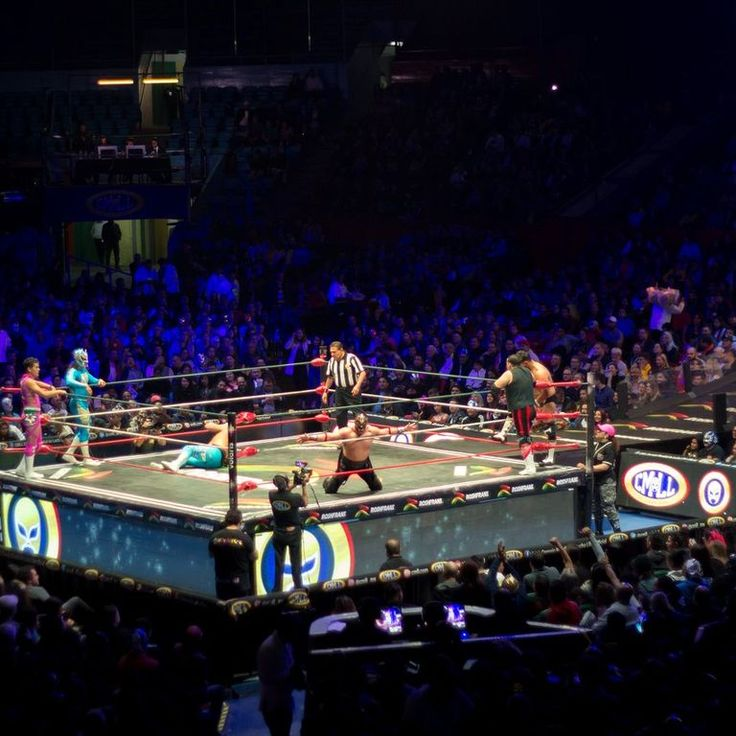

¿SABIAS QUE?
La Copa Jules Rimet, el primer trofeo de la Copa del Mundo de la FIFA, fue robada en Inglaterra en 1966. Posteriormente, fue recuperada gracias a un perro llamado Pickles, que la encontró envuelta en periódico. Tras ser robada, Brasil fue la primera selección en ganar tres Copas del Mundo, convirtiéndose en el dueño permanente de la Copa Jules Rimet. Después de la victoria de Brasil en 1970, se creó el nuevo trofeo de la Copa del Mundo, que es el que se conoce actualmente.
Jhon Jairo Pinilla
Nacido en el barrio Samper Mendoza, en la localidad de los Mártires en el centro de Bogotá, John Pinilla es uno de los jugadores de microfútbol o fútbol de salón más importantes del mundo,Es referente en el microfútbol capitalino desde que tenía 7 años de edad cuando empezó a jugar Jhon Pinilla siempre marcó diferencia entre sus rivales con talento innato. los años lo convirtieron en uno de los mejores salonistas del mundo, a través de los torneos en los que triunfó a nivel nacional e internacional.
El deporte más antiguo del mundo:
Se considera que la lucha libre es uno de los deportes más antiguos, con evidencia de su práctica en pinturas rupestres que datan de hace 15.000 años en Francia. También hay registros de lucha en el antiguo Egipto y Mesopotamia.
Los aros olímpicos y sus colores:
Los cinco aros del símbolo olímpico representan los cinco continentes habitados (África, América, Asia, Europa y Oceanía). Los seis colores que los componen (azul, amarillo, negro, verde, rojo, más el fondo blanco) fueron elegidos porque al menos uno de ellos está presente en todas las banderas nacionales del mundo.
La edad del fútbol americano profesional:
El fútbol americano profesional comenzó oficialmente en 1920 con la formación de la American Professional Football Association (APFA), que más tarde se convertiría en la NFL.
El origen del tenis de mesa (Ping-Pong):
El tenis de mesa comenzó en Inglaterra en el siglo XIX como un juego de salón para la clase alta. Se jugaba en mesas de comedor usando libros como red y pelotas de golf o corchos de champán como pelotas. El nombre "Ping-Pong" es una onomatopeya del sonido de la pelota rebotando.